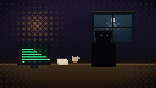

DIRECTIVE I
EVENT-DRIVEN
The Rumor Mill bus
Every domain event is a readonly struct. The bus routes them; a system imports only the event type it cares about — nothing else.

Desk 42 is a solo-developed Unity roguelite built on a strict, event-driven architecture: 71 C# scripts organised into 13 cohesive namespaces, communicating through a single decoupled event bus. This is the system — its divisions, its core machinery, and the engineering that keeps a one-person codebase maintainable.
Standing orders for the machine. One law above all: systems do not call each other directly. Logic moves through a typed event bus; content is data, not code.
Every domain event is a readonly struct. The bus routes them; a system imports only the event type it cares about — nothing else.
Cards, clients, supplies and regulations are authored as assets via factories and registries — new content needs no new code paths.
Gameplay divisions depend inward on Core, which owns canonical run state and the event definitions. Dependencies stay shallow and directed.
Each namespace is a single-responsibility division. Counts are measured from the source tree; Core is the hub everything routes through. 27 directed dependencies link the bureau.
Counts reflect the current source tree; empty scaffold namespaces (Audio, Economy, Synergy, Meta, Modes, Debug, Clients) are reserved for in-progress systems and excluded.
The machinery that carries the architecture — each isolated, instrumented, and tested at its seams.

A typed publish/subscribe spine. Every domain event is a readonly struct; the bus is the only shared dependency. The UI reacts to SanityChanged without ever knowing what raised it.
GameManager is a DontDestroyOnLoad root owning a scene-flow FSM (Boot → MainMenu → Shift → InternalAudit). RunStateController is the single source of truth for mutable run data, with a clean API and auto-save.
Clients run on a stack-based machine (ClientStateStack + TransitionTable): a pushdown automaton that suspends a state, handles an interruption, and resumes. A ClientTellSystem surfaces readable tells.
Each tree carries a per-frame tick budget and resumes partial traversals next frame. It exposes InsertBlockerForCard(...) — gameplay rewrites AI decision-making at runtime. The engine behind the signature mechanic.
A closed-loop difficulty controller. Three fast resolutions raise a pressure level (0–3) that shortens hazard intervals and unlocks severer hazards. Pressure never auto-decays — it relents only when the player struggles.
RedTape.StateInjector and the PunchCardMachine turn a player's card into a structural change in the client's behaviour tree, guarded by HasBlockerForCard. The deckbuilder and the AI meet here — through one seam.
Production discipline applied to an independent project — secured boundaries, automated tests, and gated builds.
EditMode suites under the Unity Test Framework cover scoring, state-machine transitions and economy logic — the rules most likely to regress.
A GitHub Actions workflow compiles the project and runs the EditMode suite on every push, with builds gated behind manual dispatch.
Namespaces map to .asmdef assemblies, enforcing dependency direction at compile time and keeping iteration fast.
Every major script opens with a header comment stating its responsibility, threading model and integration points — the architecture is legible from the source.
Event-driven decoupling, data-driven content and adaptive systems recur across projects. Verified Desk 42 evidence cross-referenced against a second dossier.
The Desk 42 column is confirmed from source. The Kindred Siege column holds placeholders — replace the marked values with confirmed figures before submitting as evidence.